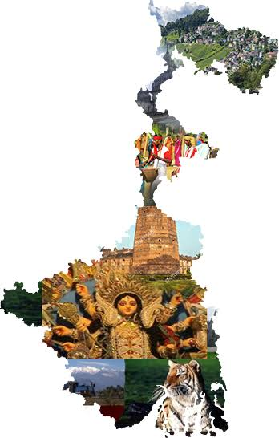
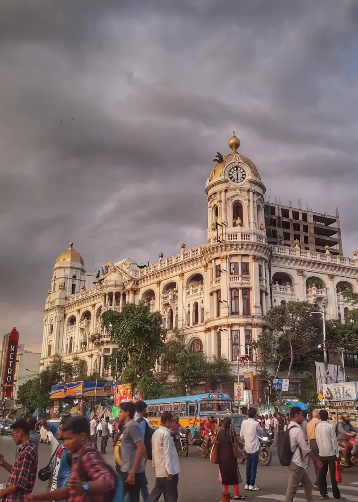
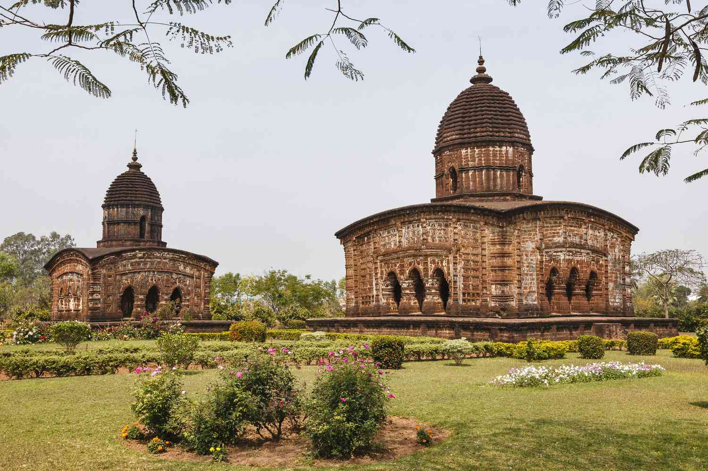
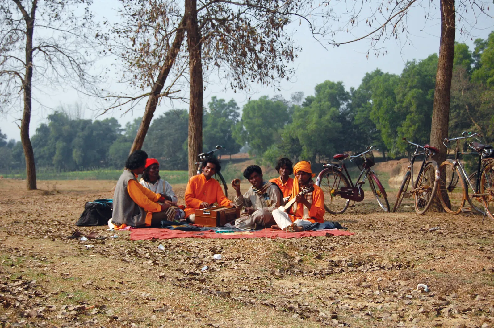
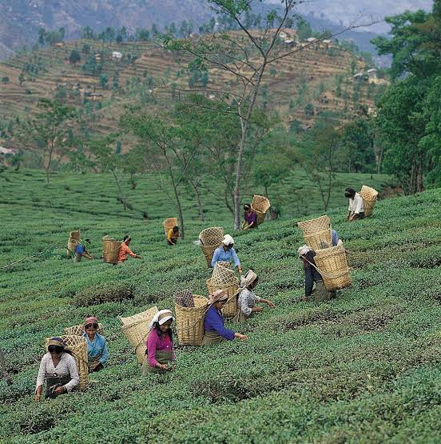
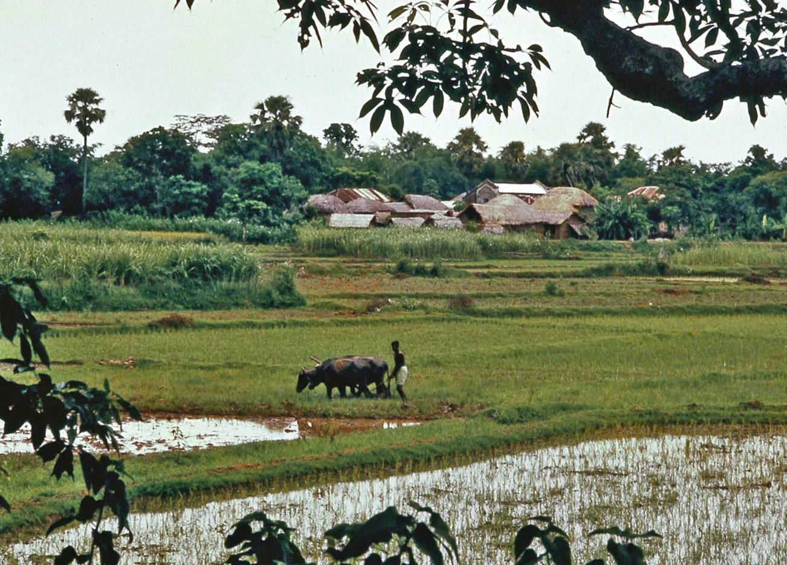
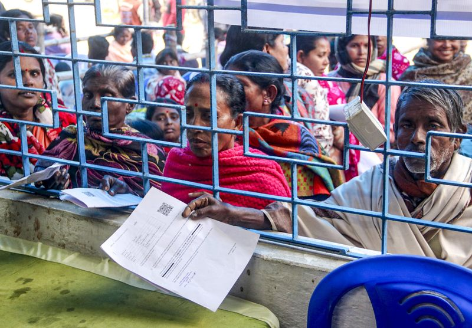
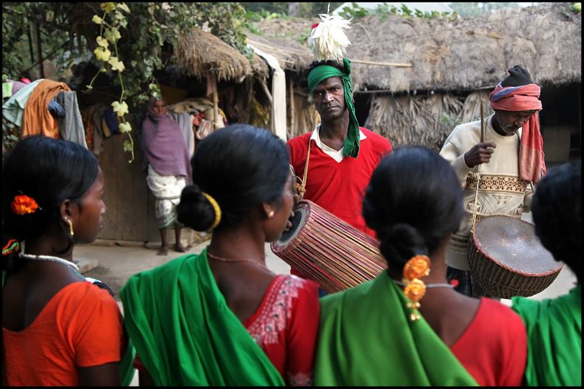

আপনার সমস্যা বুঝুন What's going wrong, and what to do next
অন্নপূর্ণা ভাণ্ডার, রেশন কার্ড বা স্বাস্থ্য সাথীর টাকা আটকে গেলে কারণ ও করণীয় জানুন। অথবা রাজ্যের প্রায় ৯০টি প্রকল্পের সম্পূর্ণ তালিকা দেখুন — নাম, সুবিধা, আবেদনের পদ্ধতি ও যোগাযোগ, সব এক জায়গায়।

SCHEMES
COVERED






দুটি হাতিয়ার, একটাই লক্ষ্য · Two tools, one goal
Most directories only help people apply. This helps people who already applied and are stuck — plus a complete reference for everything else.

সমস্যার সমাধান খুঁজুন
Payment stopped, application rejected, card not working at the shop or hospital? Answer a few questions and get a specific next step — for Annapurna Bhandar, Ration Card, and Swasthya Sathi/Ayushman Bharat.

সব প্রকল্পের তালিকা
A searchable directory of West Bengal state schemes, applicable central schemes, and MSME/business incentives — benefit amount, how to apply, and who to contact.